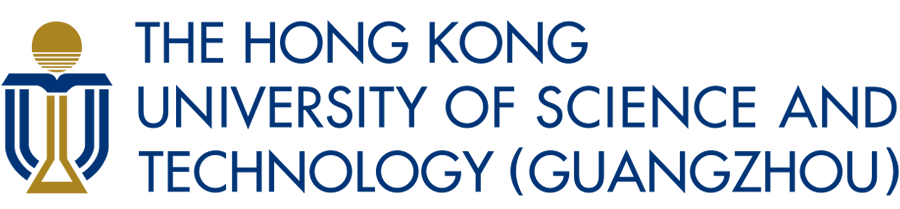

Collaborative Interactive Visualization & Analysis Lab
ABOUT US
The HKUST-CIVAL group develops interactive visualizations to promote the interplay between human, machines, and big data. We are specialized in visualization and visual analytics, VR/AR, human-computer interaction, and urban computing. Currently we are focusing on 1) Visualization and Visual Analytics, 2) Creative Control over AIGC, with applications on 3) Cultural Heritage, Document Analysis, and Urban Informatics.

RECENT NEWS
- Nov. '24: Our paper 'Centennial Drama Reimagined: An Immersive Experience of Intangible Cultural Heritage through Contextual Storytelling in Virtual Reality' got accepted to ACM Journal on Computing and Cultural Heritage. Congrats to Jian Yu.
- Sept. '24: Our paper 'AI-rays: Exploring Bias in the Gaze of AI Through a Multimodal Interactive Installation' got accepted to SIGGRAPH Asia 2024 Art Papers. Congrats to Ziyao Gao.
- Sept. '24: Invited to serve as an Associate Chair for the Design subcommittee in ACM CHI 2025.
- Aug. '24: Invited to serve on the Editorial Board for The Visual Computer.
- July '24: Two papers got accepted to IEEE VIS 2024.
- 'ModalChorus: Visual Probing and Alignment of Multi-modal Embeddings via Modal Fusion Map'. Congrats to Yilin Ye.
- 'Advancing Multimodal Large Language Models in Chart Question Answering with Visualization-Referenced Instruction Tuning'. Congrats to Xingchen Zeng.
CONTACT
Address:
1 Duxue Road, Nansha District, Guangzhou City, Guangdong Province, 511458
广东省广州市南沙区笃学路1号，511458
Email:
Prof. Wei ZENG
weizeng@hkust-gz.edu.cn